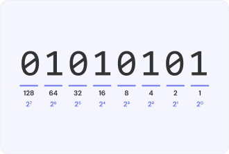
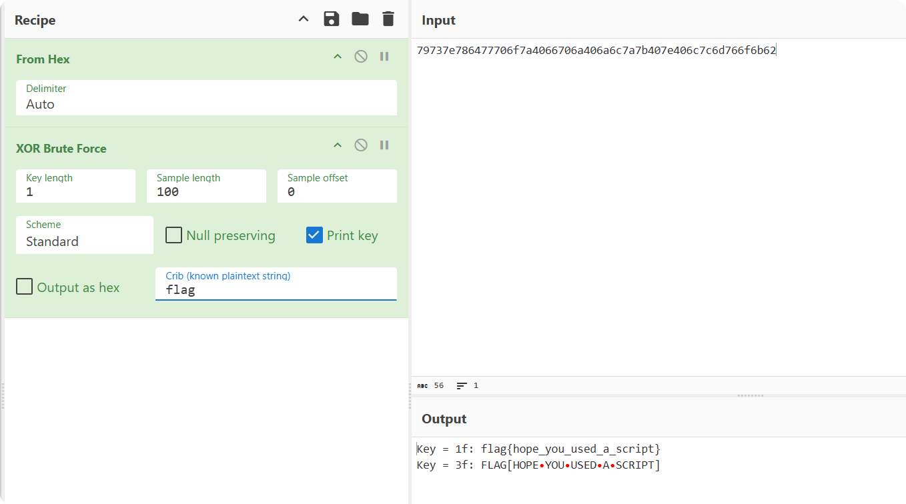

编码
进制
二进制（Binary）

二进制是一种使用 0 和 1 的数值表示方式。每个二进制位称为比特（bit）。
八进制（Octal）
十进制（Decimal）
十六进制（Hexadecimal）
十六进制是一种基数为 16 的数值表示法，数字是由 0 到 9 和 A 到 F 组成，广泛应用于计算机科学及其相关领域。

由于 1 Byte = 8 Bit，一个字节的一半（4 位）有 16 种不同的组合，也就是说可以用两个十六进制数来表示一个字节。
常见用来表示十六进制数的前缀有0x和\x，如0xA、\x61等。
666c61677b733333696e675f6833787d
$ python3
Python 3.13.3 (main, Apr 10 2025, 21:38:51) [GCC 14.2.0] on linux
Type "help", "copyright", "credits" or "license" for more information.
>>> bytes.fromhex("666c61677b733333696e675f6833787d").decode()
'flag{s33ing_h3x}'
ASCII
ASCII（American Standard Code for Information Interchange，美国标准信息交换码）是一种字符编码方案。
在计算机中，所有数据存储和运算都使用二进制表示，因计算机通过高电平和低电平分别对应 1 和 0。字母、数字以及常用符号在计算机中也需要使用二进制表示。为确保互通，必须使用统一的编码规则，因此美国标准化组织制定了 ASCII 编码，规定了常用符号对应的二进制数字。
标准 ASCII 使用 7 个比特来表示字符，因此可以编码 128 个不同的字符。扩展 ASCII 是在标准 ASCII 的基础上，使用 8 个比特来表示字符。

Unicode
Unicode 是一种计算机字符编码标准，于 1987 年首次提出，旨在为所有语言和字符提供一个统一的编码系统。它的主要目的是解决不同字符集之间的不兼容问题，确保能够在全球范围内一致地处理和显示文本。Unicode 支持几乎所有现代书写系统，包括拉丁文、汉字、阿拉伯文、希腊文、德文和许多其他语言的符号和字符。
Unicode 支持多种编码形式，以满足不同应用程序的需求，包括：
- UTF-8：可变长度编码，兼容 ASCII，广泛用于互联网和现代应用。一个字符可以使用 1 到 4 个字节表示。对于 ASCII 字符（0-127），编码与标准 ASCII 相同；而对于其他字符，UTF-8 使用多个字节。
- UTF-16：通常用于需要处理大量东亚字符的环境，比如 Java 和 Windows。它使用 2 或 4 个字节表示每个字符。
- UTF-32：固定长度编码，使用 4 个字节表示每个字符，常用于内部处理和某些特定情况下。
URL编码
HTML实体编码
异或XOR
异或（XOR）是一种位运算符，符号为 ^。其规则是：两个二进制位相同则结果为 0，不同则结果为 1。
| A | B | A ^ B |
|---|---|---|
| 0 | 0 | 0 |
| 0 | 1 | 1 |
| 1 | 0 | 1 |
| 1 | 1 | 0 |
异或的性质：
- 任意数与 0 异或结果为其本身：
A ^ 0 = A - 任意数与自身异或结果为 0：
A ^ A = 0 - 异或运算满足交换律和结合律：
A ^ B = B ^ A，(A ^ B) ^ C = A ^ (B ^ C)
示例代码
例题分析
例题-XOR
79737e786477706f7a4066706a406a6c7a7b407e406c7c6d766f6b62
- 题目分析
题目提供了一串十六进制数字，我们知道两个十六进制数字可以表示一个字节。根据题目名称，可以通过暴力破解方式来寻找异或秘钥，以实现解密。
- 解法一
cipher = bytes.fromhex("79737e786477706f7a4066706a406a6c7a7b407e406c7c6d766f6b62")
# 遍历所有可能的单字节密钥（从 0x00 到 0xff）
for i in range(0x00, 0xff):
result = "".join(chr(i ^ j) for j in cipher)
if "flag" in result:
print("Flag found:", result)
- 解法二
我们主要使用 CyberChef 的XOR Brute Force模块，在正确使用该模块之前，需要首先使用From Hex功能将提供的字符串转为以两个十六进制数表示的字节数组。

字母频率统计
$ cat flag.txt | fold -w1 | sort | uniq -c | sort -nr
2508 G
2481 X
2453 Y
2301 {
2221 g
2087 a
fold -w1将每个字符放在单独的一行。sort对字符进行排序。uniq -c统计出现次数。sort -nr根据出现次数从高到低排序。